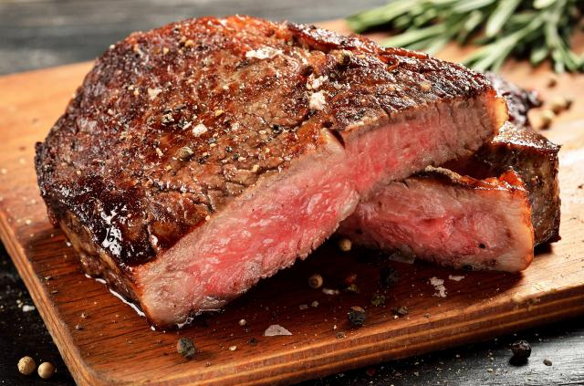
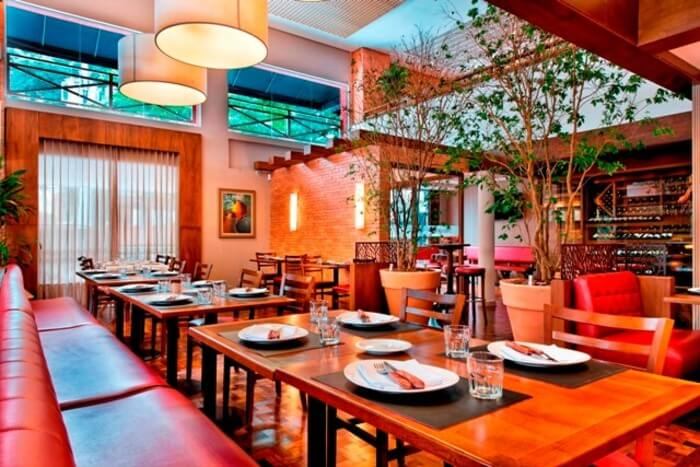
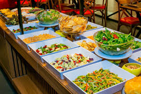
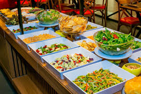

Onde o Sabor da Carne Encontra a Tradição Gaúcha
Venha desfrutar do melhor rodízio de carnes nobres de Curitiba!
Faça sua ReservaNossa História
Há mais de 20 anos, a Churrascaria Sabor Gaúcho traz para você a autêntica experiência do churrasco tradicional. Com cortes selecionados e um atendimento impecável, garantimos uma refeição inesquecível para toda a família.
Nossos mestres churrasqueiros preparam cada peça com paixão, resultando em carnes suculentas e no ponto certo. Venha nos visitar e comprove!
Nosso Cardápio
Rodízio Completo
- Picanha
- Costela Fogo de Chão
- Fraldinha
- Alcatra
- Maminha
- Linguiça Artesanal
- Coração de Frango
- E muito mais...
Acompanhamentos variados e buffet de saladas.
Buffet de Saladas e Pratos Quentes
Uma vasta seleção de saladas frescas, queijos, pratos quentes e sobremesas para complementar seu rodízio.
Nossa Galeria


 

Entre em Contato
Estamos ansiosos para recebê-lo!
- Endereço: Rua da Churrascaria, 1234, Curitiba - PR
- Telefone: (41) 1234-5678
- Email: contato@saborgaucho.com.br
Horário de Funcionamento:
Terça a Sexta: 18h00 - 23h00
Sábado e Domingo: 12h00 - 16h00 e 18h00 - 23h00
Segunda-feira: Fechado